Recurrent Neural Networks¶
Variants of Neural Networks：
- Convolutional Neural Network (CNN)
- Recurrent Neural Network (RNN) Neural Network with Memory
Basic structure of RNN
Given function :
\[
f:h',y=f(h,x)
\]
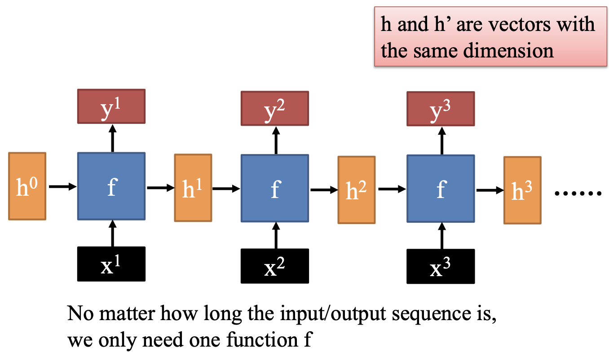
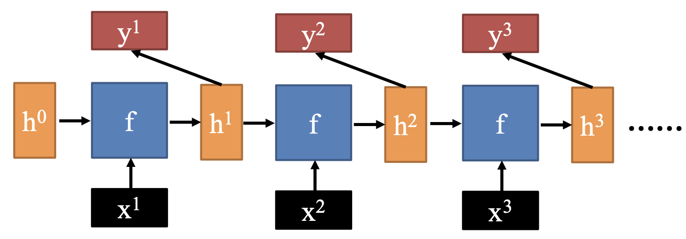
RNN最核心的适用场景是序列数据（Sequential Data）
- 这类数据的共同特征是：数据点之间存在时间或顺序上的依赖关系，即当前时刻的数据状态往往依赖于前一个或多个时刻的状态。
1. Naïve RNN¶
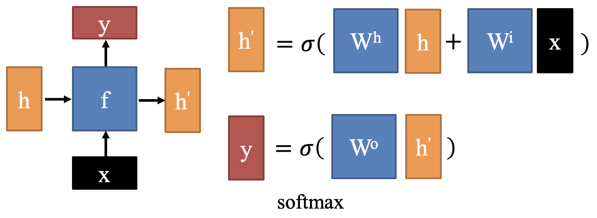
RNN 的主要问题：
- 梯度消失与梯度爆炸 (Vanishing & Exploding Gradients)
- 梯度消失：序列较长时，反向传播的过程中梯度会连乘多次。如果激活函数的导数小于 \(1\)，或者权重矩阵的特征值小于 \(1\)，梯度会随着时间步的增加呈指数级衰减，最终趋近于 \(0\)
- 后果：网络前面的层的参数几乎得不到更新，模型“忘记”了很久以前的输入信息。
- E.g.，在处理长句子时，它可能无法关联句首的主语和句尾的谓语。
- 梯度爆炸：如果连乘项大于 \(1\)，梯度会呈指数级增长，导致数值溢出（变成 NaN），模型参数剧烈震荡，无法收敛
- 梯度消失：序列较长时，反向传播的过程中梯度会连乘多次。如果激活函数的导数小于 \(1\)，或者权重矩阵的特征值小于 \(1\)，梯度会随着时间步的增加呈指数级衰减，最终趋近于 \(0\)
- 记忆能力有限 (Limited Memory Capacity)
- 标准 RNN 的有效“记忆窗口”非常短。它通常只能记住最近几个时间步的信息，对于需要跨越几十甚至上百个时间步的依赖关系，标准 RNN 表现极差。
2. LSTM¶
Long Short-Term Memory：引入独立的 “细胞状态” c，作为长期记忆的载体
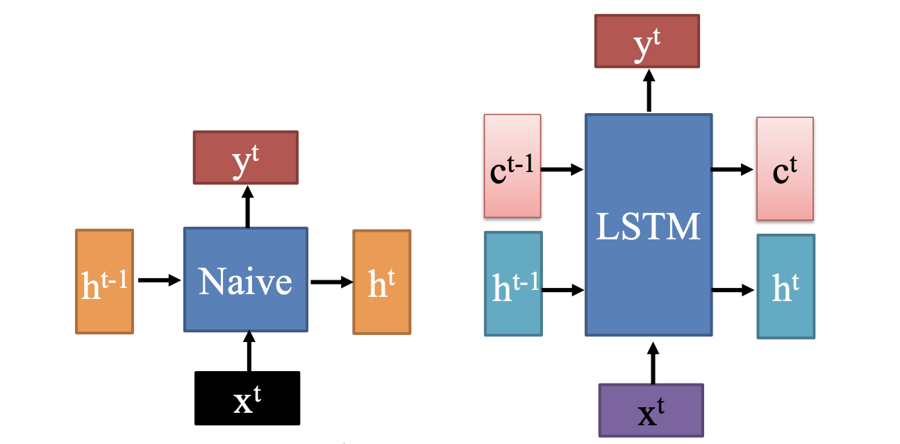
- 细胞状态 \(c\) 变化缓慢 → 长期记忆通道
- \(c^t\) 是基于 \(c^{t-1}\) “加上一些东西”（通过门控机制控制加减）
- 缓解了梯度消失，梯度可以沿着 \(c\) 直接传递多个时间步而不被连乘衰减
- 隐藏状态 \(h\) 变化较快 → 短期响应与输出
- \(h^t\) 是根据当前输入 \(x^t\)、前一隐藏状态 \(h^{t-1}\) 和当前细胞状态 \(c^t\) 计算得出
- 它可以剧烈变化，用于响应当前输入并生成输出 \(y^t\)
2.1 How to Update¶
LSTM 的核心在于通过四个关键变量来控制信息流：
-
候选细胞状态（Candidate Cell State）
\[ z = \tanh\left( W \begin{bmatrix} x^t \\ h^{t-1} \end{bmatrix} \right) \]- \(W\)：权重矩阵（合并了输入和隐藏状态的权重）
- \(\begin{bmatrix} x^t \\ h^{t-1} \end{bmatrix}\)：将输入和前一隐藏状态拼接成一个向量
- \(\tanh\)：激活函数，输出范围 \([-1, 1]\)，表示“可能写入细胞状态的新内容”
此处的 z 是“原材料”，是否被写入、写入多少，由后面的门控制。
-
输入门（Input Gate）
\[ z^i = \sigma\left( W^i \begin{bmatrix} x^t \\ h^{t-1} \end{bmatrix} \right) \]- \(\sigma\)：sigmoid 函数，输出范围 \([0, 1]\)
- 控制“有多少新信息要写入细胞状态”
- 值接近 1 → 全部写入；接近 0 → 不写入
3. 遗忘门（Forget Gate）
\[ z^f = \sigma\left( W^f \begin{bmatrix} x^t \\ h^{t-1} \end{bmatrix} \right) \]- 控制“保留多少旧的细胞状态”
- 值接近 1 → 完全保留；接近 0 → 完全遗忘
4. 输出门（Output Gate）
$$
z^o = \sigma\left( W^o \begin{bmatrix} x^t \ h^{t-1} \end{bmatrix} \right)
$$- 控制“从细胞状态中提取多少信息作为新的隐藏状态 \(h^t\)”
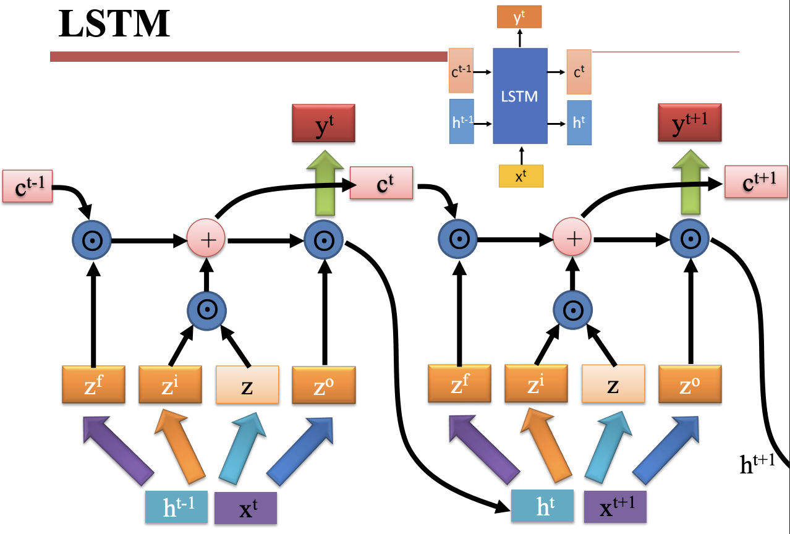
迭代公式：
\[
\begin{align}
c^t &= z^f \odot c^{t-1} + z^i \odot z \\
h^t &=z^o \odot \tanh{c^t} \\
y^t &=\sigma(W'h^t)
\end{align}
\]
2.2 GRU¶
LSTM 的高效在于少数关键设计：
- 遗忘门（核心）
- 输出门激活函数（稳定性保障）
- 细胞状态加法更新（隐含前提）
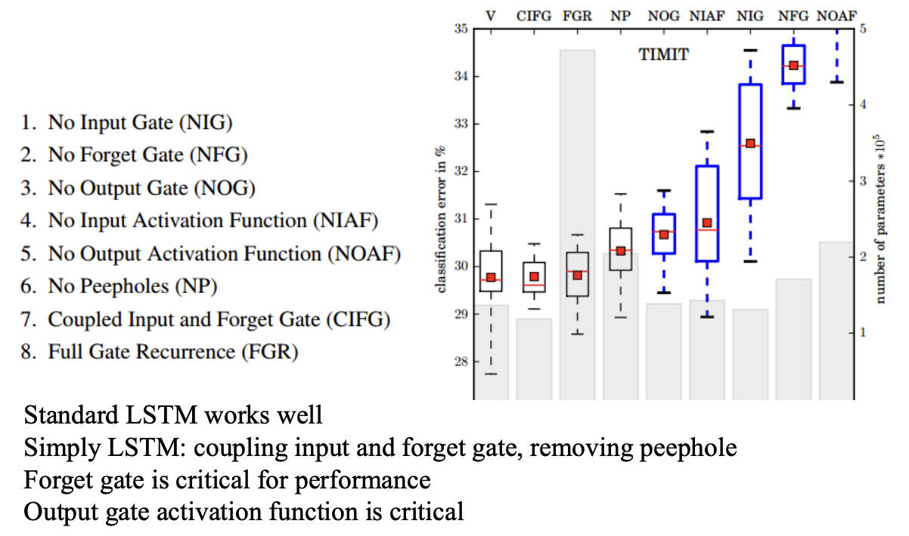
这提供了简化思路：CIFG + NP ≈ 标准 LSTM 性能
→ GRU（只有两个门：重置门 + 更新门，本质是耦合的输入/遗忘门）
Gated Recurrent Unit
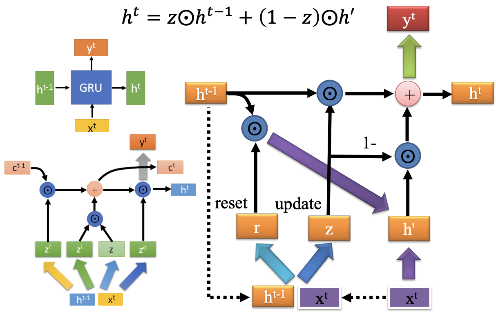
- 利用当前输入 \(x^t\) 和上一时刻隐藏状态 \(h^{t−1}\) 计算两个门：
\[
r = \sigma(W^r \begin{bmatrix} x^t \\ h^{t-1} \end{bmatrix}) \quad , \quad z = \sigma(W^z \begin{bmatrix} x^t \\ h^{t-1} \end{bmatrix})
\]
- **重置门** (Reset Gate, $r$)：
- 决定忽略多少过去的信息
- 如果 $r\approx 0$，则“重置”历史，只关注当前输入
- **更新门** (Update Gate, $z$)：
- 决定保留多少过去的信息
- 平衡“旧记忆”与“新候选值”的权重
- 计算候选隐藏状态 ( \(h'\) )
\[
h' = \tanh(W^h \begin{bmatrix} x^t \\ r \odot h^{t-1} \end{bmatrix})
\]
- $H^{t-1}$ 先被重置门 $r$ 调制
→ 如果 $r\approx0$，则忽略过去；如果 $r\approx 1$，则完整使用
- 然后用 $\tanh$ 激活，生成“新候选状态”
- 最终隐藏状态更新 ( \(h^t\) )
\[
h^t = z \odot h^{t-1} + (1 - z) \odot h'
\]
- $z$ 越大 → 越多保留旧状态 $h^{t-1}$
- $z$ 越小 → 越多采用新候选 $h'$
- 相当于一个“软切换”：在“记住过去”和“接受新知”之间动态平衡
Nested LSTM¶
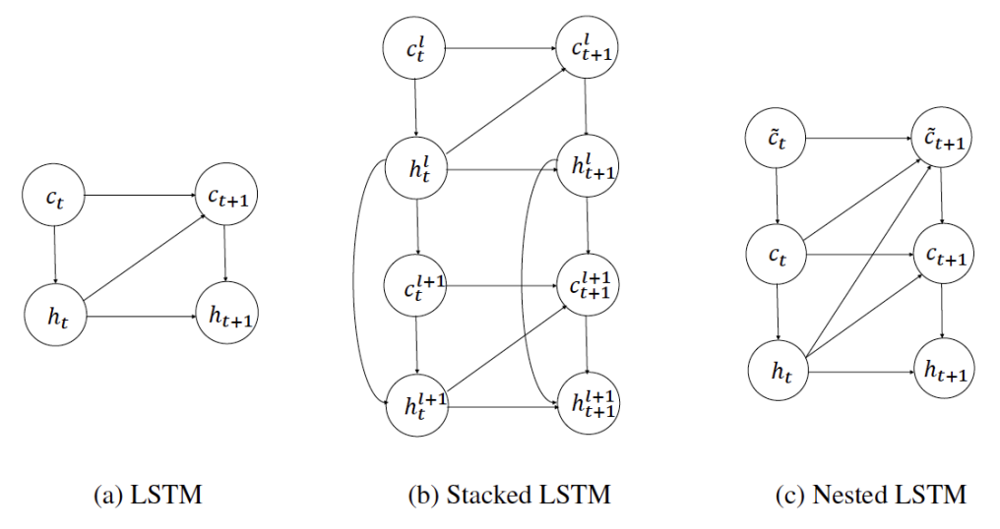
| 特性 | (a) 标准 LSTM | (b) Stacked LSTM | (c) Nested LSTM |
|---|---|---|---|
| 层数 | 1 | ≥2 | 1（但含嵌套子结构） |
| 状态变量 | \(c, h\) | \(c^l, h^l\) (每层独立) | \(c̃, c, h\)（三层嵌套） |
| 层间通信 | 无 | 单向（\(h^l → \text{input}^{l+1}\)） | 多向（\(c̃↔c↔h\)，跨层直连） |
| 时间传递路径 | \(c→c, h→h\) | 每层内 \(c^l→c^l, h^l→h^l\) | \(c̃→c̃, c→c, h→h\) + 跨层跳转 |
| 表达能力 | 基础 | 强（深度抽象） | 极强（动态控制+多尺度记忆） |
| 参数量 | 少 | 中~多 | 多 |
| 训练稳定性 | 高 | 中 | 低（需技巧） |
| 实际应用广泛度 | 高 | 非常高 | 低（研究型） |
3. RNN for NLP¶
3.1 Long-distance Dependencies¶
NLP 本质上是处理序列数据（Sequential Data），其层级结构如下：
- Words in sentences
- Characters in word
- Sentences in discourse
- ...
RNNs 擅长捕捉长距离依赖（Long-distance Dependencies）
- Agreement in number, gender, etc. (数与性的一致)
- 模型需要记住句首的主语特征，以便在句尾生成正确的代词或动词形式，即使中间隔了很长的修饰语
- Example:
- He does not have very much confidence in himself.
- She does not have very much confidence in herself.
- Selectional preference (选择偏好)
- 词语之间的搭配不仅受语法约束，还受语义逻辑约束。模型需要理解名词之间的语义兼容性
- Example:
- The reign has lasted as long as the life of the queen.
- The rain has lasted as long as the life of the clouds.
- What is the referent of "it"? (代词指代消解)
- The trophy would not fit in the brown suitcase because it was too big.
- The trophy would not fit in the brown suitcase because it was too small.
3.2 Unrolling in Time¶
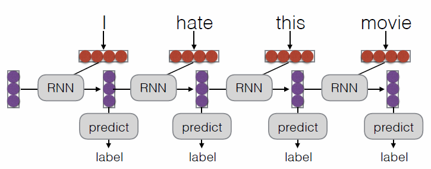
What Can RNNs Do?
- Represent a sentence
- 逐个读取句子中的单词，每一步都会更新隐藏状态。直到读取完整个句子后才输出一个最终的向量
- 用途：句子分类 (Sentence Classification)
- Represent a context within a sentence
- 每读入一个单词，立刻就根据当前的输入和之前的记忆产生一个输出。即为每一个位置计算“到目前为止的上下文表示”
- 用途：标注 (Tagging)，语言模型 (Language Modeling)，解析 (Parsing）
3.3 What can LSTMs Learn?¶
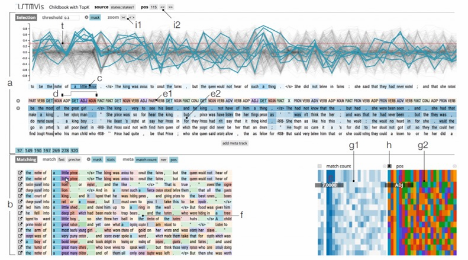
- 结构与句法模式 (Syntax & Structure)
图中 a 部分展示了神经元激活程度的变化- 长程依赖： 某些神经元会在括号开始时被激活，直到括号结束才关闭；或者在一段引号内容的起始和结束点产生剧烈波动
- 计数能力： LSTM 能够学习到句子的长度或者结构的对称性
- 词性识别： 如图中标记的
ADJ（形容词）、NOUN（名词）等颜色块，某些神经元专门负责识别特定的词性序列
- 局部模式匹配 (Pattern Matching)
b 部分展示了 "Matching" 功能：- 当它看到类似 "the mother of..."、"the king of..." 这种结构时，特定的神经元组合会以非常相似的方式激活
- LSTM 能够识别并记住短语模板或常见的语言习惯
- 语义与上下文关联 (Semantic Context)
右下角的彩色矩阵（g1, h, g2部分）代表了神经元的激活状态：- 状态聚类：相似语义的词（例如都是关于“皇室”的词：king, queen, prince）会激活相似的神经元模式
- 预测能力：通过这些激活状态，模型能推断出接下来的词大概率是什么类别
3.4 Encoder-Decoder Model¶
上层：编码器 (Encoder)
- 任务：逐个读取源语言，负责“读懂”输入序列
- 结果：编码器将整句话压缩成一个固定长度的向量（Context Vector，上下文向量）。这个向量包含了原句的所有语义信息。
下层：解码器 (Decoder)
- 任务：
- 接收编码器传来的 Context Vector 作为初始状态
- 逐个生成单词（图中是英语：I hate this movie）
- 自回归性： 解码器在生成当前单词时，会参考前一个已经生成的单词。
- 当模型输出
</s>（End of Sentence）标记时，表示生成结束。
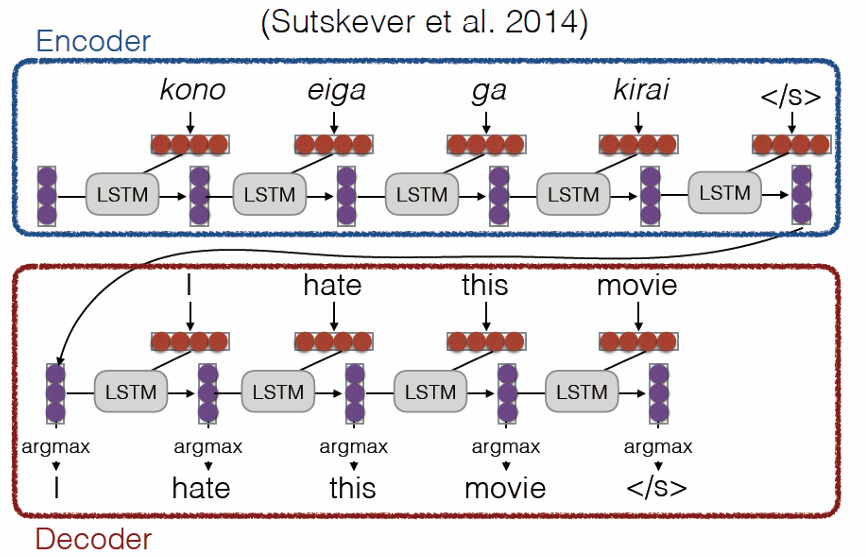
Tip
- 在早期的神经网络中，输入和输出的长度必须是固定的。
- Encoder-Decoder 打破了这种长度限制。编码器负责将变长的输入映射为一个固定维度的“思想向量”，解码器再根据这个向量展开成另一个变长的输出。
- 弱点：信息瓶颈 (Information Bottleneck)。无论原句多长（比如 100 个词），最后都必须压缩成一个固定大小的向量。这会导致处理长句子时效果变差。为解决这个问题，下面将引出注意力机制 (Attention Mechanism)。
4. Attention¶
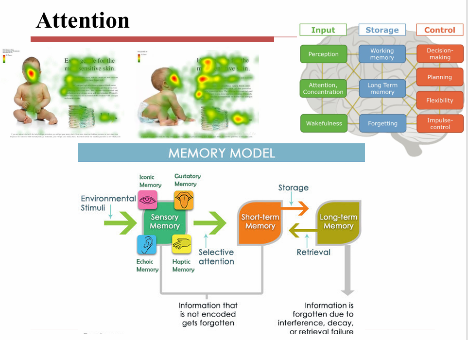